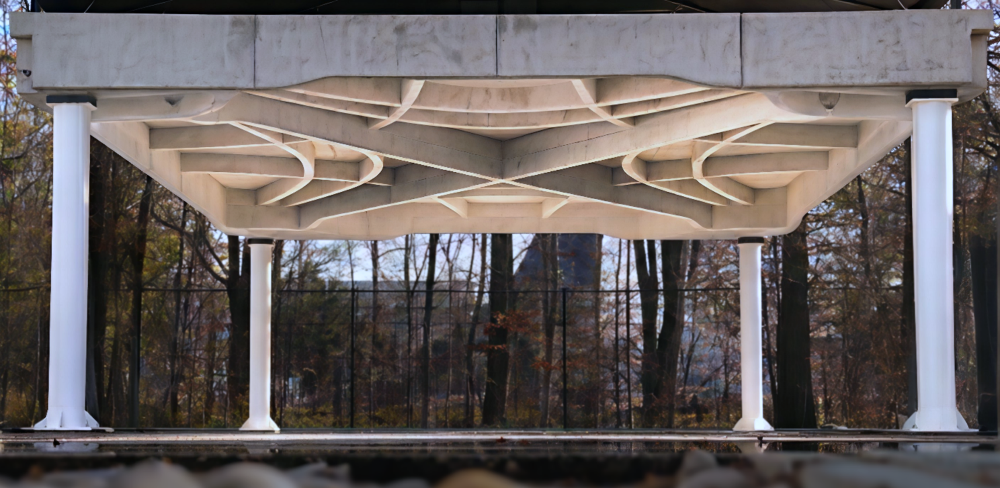
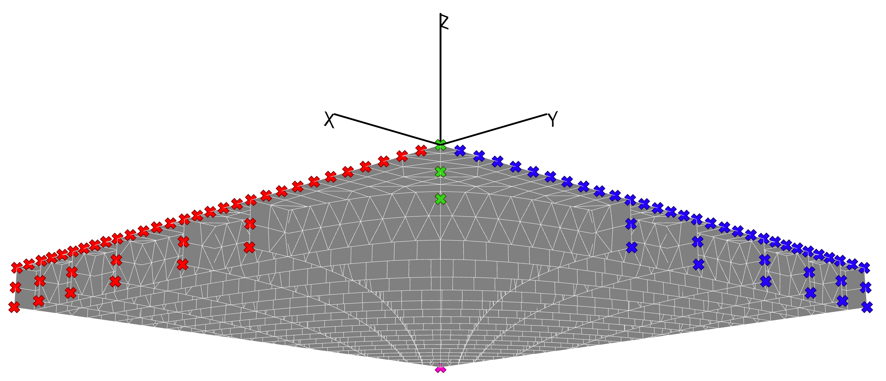
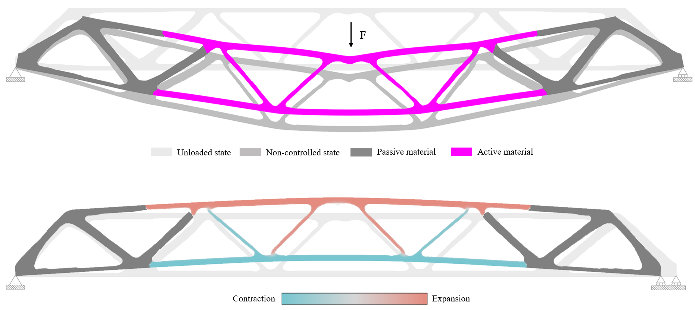

Structures & Buildings
Strutture & Costruzioni
Design and analysis of civil and structural systems
Progettazione e analisi di sistemi civili e strutturali
Hi, welcome to my world. Here you can explore my academic and professional path in civil engineering – a field where I believe efficiency meets beauty, and well-designed structures themselves embody beauty standards.
Benvenuto nel mio mondo. Qui puoi esplorare il mio percorso accademico e professionale nell’ingegneria civile – un ambito in cui, per me, l’efficienza incontra la bellezza e le strutture ben progettate incarnano loro stesse i canoni di bellezza.

Design and analysis of civil and structural systems
Progettazione e analisi di sistemi civili e strutturali

FEA, simulation and optimization workflows
FEA, simulazione e processi di ottimizzazione

Research on passive–active systems and smart structures
Ricerca su sistemi passivo–attivi e strutture intelligenti
Short bio, CV and portfolio
Breve bio, CV e portfolio
Selection of academic and professional projects
Selezione di progetti accademici e professionali
Research interests and publications
Interessi di ricerca e pubblicazioni